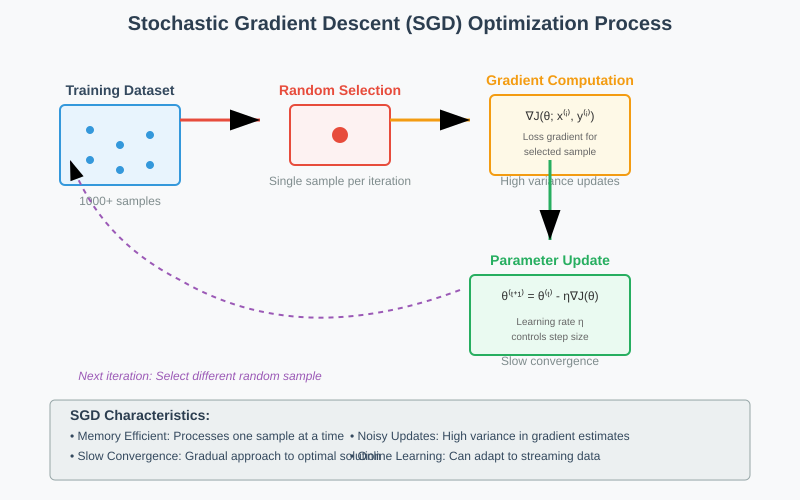
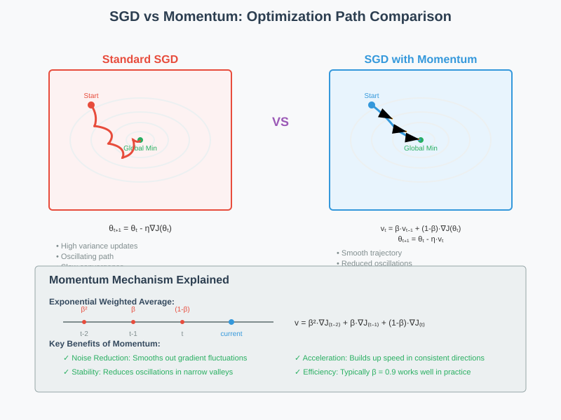
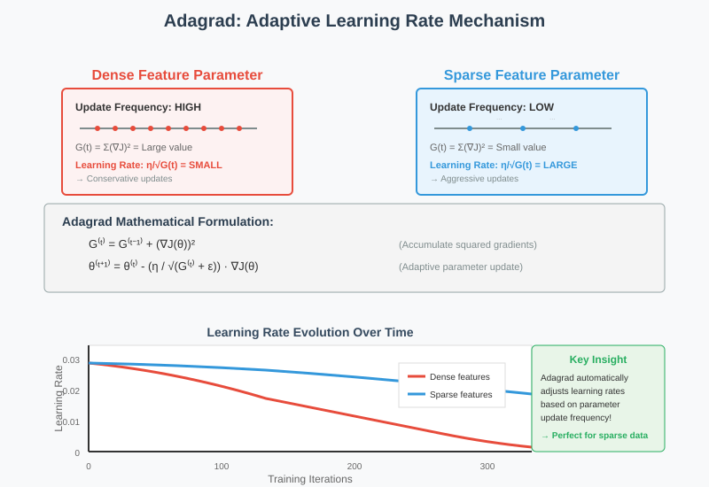
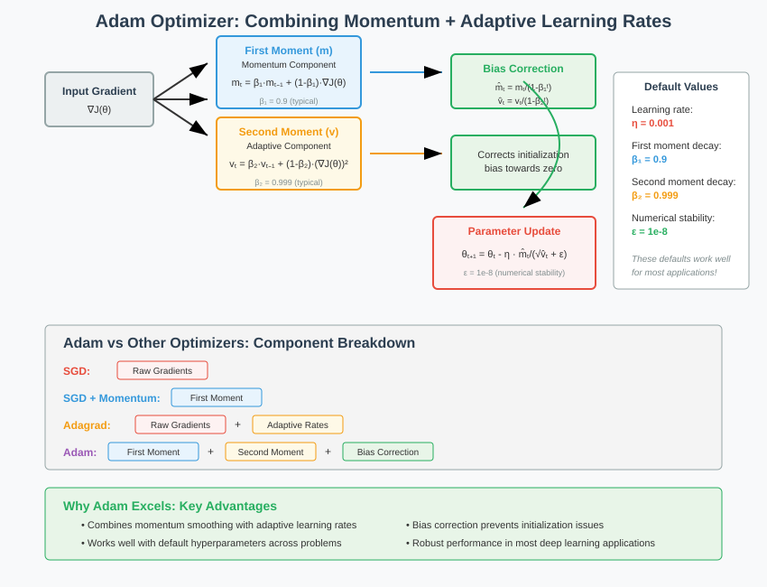
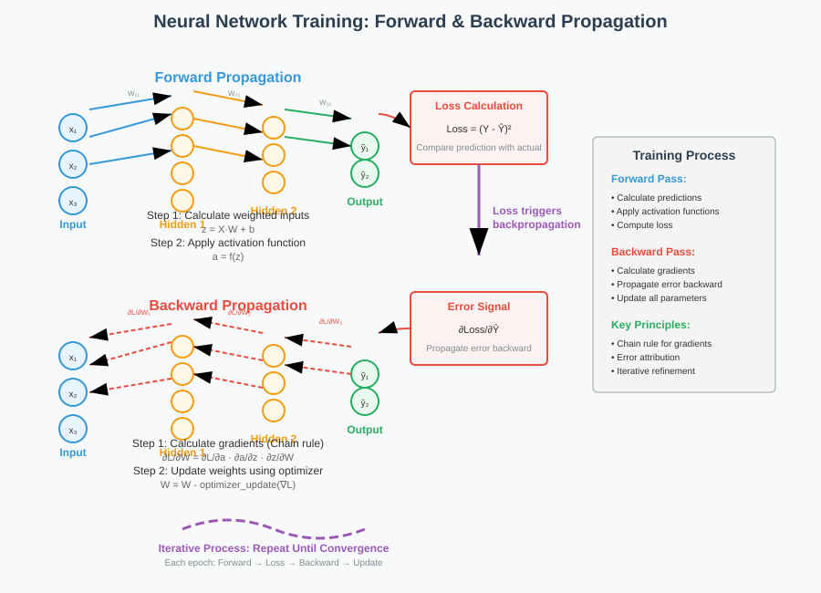

Neural Network Optimizers: Complete Guide
🧭 Quick Navigation
- Introduction to Optimizers
- Types of Optimizers
- Stochastic Gradient Descent (SGD)
- Gradient Descent with Momentum
- Adagrad (Adaptive Gradient Algorithm)
- Adam (Adaptive Moment Estimation)
- Neural Network Training Process
- Forward Propagation
- Backward Propagation
- Optimizer Comparison
- Implementation Examples
- References & Further Reading
🎯 Introduction to Optimizers
Optimizers are the algorithmic engines that drive neural network learning by systematically adjusting network parameters—including weights, biases, and learning rates—to minimize the loss function. During the backpropagation process, optimizers determine how these parameters should be updated based on computed gradients.

The fundamental goal of any optimizer is to find the optimal set of parameters that minimize the difference between predicted outputs and actual targets, effectively enabling the neural network to learn from training data.
Key Functions of Optimizers:
- Parameter Updates: Modify weights and biases based on gradient information
- Loss Minimization: Guide the network toward optimal solutions
- Convergence Control: Determine the speed and stability of training
- Generalization: Help prevent overfitting through appropriate parameter adjustments
🔧 Types of Optimizers
Stochastic Gradient Descent (SGD)
Stochastic Gradient Descent (SGD) represents the foundational optimization algorithm in deep learning. Unlike traditional batch gradient descent, SGD processes training data one sample at a time, making it computationally efficient for large datasets.
Core Mechanism:
During each training iteration, SGD selects a random data point from the dataset to compute the gradient of the loss function. For example, in a dataset containing 1,000 data points, SGD considers only one data point per iteration for derivative calculations.
Mathematical Formulation:
θ(t+1) = θ(t) - η * ∇J(θ; x(i), y(i))
Where:
- θ represents the parameters (weights and biases)
- η is the learning rate
- ∇J is the gradient of the loss function
- x(i), y(i) is the randomly selected training sample
Characteristics:
- Slow Convergence: Reaches global minima gradually due to single-sample processing
- Noisy Updates: Parameter updates exhibit high variance due to individual sample influence
- Memory Efficient: Requires minimal memory as only one sample is processed at a time
- Online Learning: Capable of learning from streaming data

Gradient Descent with Momentum
Gradient Descent with Momentum addresses SGD's noise problem by incorporating information from previous gradient computations, creating smoother parameter updates that accelerate convergence.
Mathematical Formulation:
v(t) = β * v(t-1) + (1-β) * ∇J(θ)
θ(t+1) = θ(t) - η * v(t)
Where:
- v(t) is the velocity (exponentially weighted average of gradients)
- β is the momentum parameter (typically 0.9)
Key Advantages:
- Noise Reduction: Exponentially weighted averages smooth out gradient fluctuations
- Accelerated Convergence: Maintains consistent direction across similar gradients
- Improved Stability: Reduces oscillations in gradient descent trajectory
- Better Performance: Generally outperforms vanilla SGD in practice
Momentum Mechanism:
The momentum term accumulates gradients from previous iterations, creating a "velocity" that helps the optimizer maintain direction even when individual gradients are noisy. This mechanism is particularly effective in navigating ravines and avoiding local minima.
Adagrad (Adaptive Gradient Algorithm)
Adagrad introduces adaptive learning rates by adjusting the learning rate for each parameter individually based on historical gradient information. This approach is particularly effective for handling sparse features and parameters with different update frequencies.

Mathematical Formulation:
G(t) = G(t-1) + (∇J(θ))²
θ(t+1) = θ(t) - (η / √(G(t) + ε)) * ∇J(θ)
Where:
- G(t) accumulates squared gradients
- ε is a small constant (typically 1e-8) to prevent division by zero
Core Principles:
- Parameter-Specific Learning Rates: Each parameter receives individual learning rate adjustments
- Frequency-Based Adaptation: Parameters updated frequently receive smaller learning rates
- Sparse Feature Optimization: Higher learning rates for sparse features due to lower update frequency
- No Momentum Component: Simpler implementation compared to momentum-based methods
Advantages and Limitations:
Advantages: - Excellent performance on sparse data - Automatic learning rate adaptation - No manual learning rate tuning required
Limitations: - Learning rate decay can be too aggressive - May stop learning prematurely in long training sessions - Accumulation of squared gradients never decreases
Adam (Adaptive Moment Estimation)
Adam represents the state-of-the-art optimization algorithm that combines the benefits of both Adagrad's adaptive learning rates and SGD with Momentum's gradient smoothing. It maintains separate exponentially decaying averages for both gradients and squared gradients.

Mathematical Formulation:
m(t) = β₁ * m(t-1) + (1-β₁) * ∇J(θ) # First moment estimate
v(t) = β₂ * v(t-1) + (1-β₂) * (∇J(θ))² # Second moment estimate
m̂(t) = m(t) / (1 - β₁ᵗ) # Bias-corrected first moment
v̂(t) = v(t) / (1 - β₂ᵗ) # Bias-corrected second moment
θ(t+1) = θ(t) - η * m̂(t) / (√v̂(t) + ε)
Where:
- β₁ = 0.9 (first moment decay rate)
- β₂ = 0.999 (second moment decay rate)
- ε = 1e-8 (numerical stability constant)
Key Features:
- Momentum Integration: Uses exponentially weighted averages like SGD with Momentum
- Adaptive Learning Rates: Incorporates squared gradient scaling like Adagrad
- Bias Correction: Corrects initialization bias in moment estimates
- Robust Performance: Performs well across diverse problem domains
Why Adam Excels:
- Bias Correction: Addresses initialization bias that affects other optimizers
- Balanced Approach: Combines benefits of multiple optimization strategies
- Hyperparameter Robustness: Default parameters work well in most scenarios
- Convergence Speed: Typically converges faster than alternatives
🔄 Neural Network Training Process
Neural network training operates through two fundamental phases that work in tandem: Forward Propagation and Backward Propagation. These processes form the complete learning cycle that enables networks to adjust parameters and improve performance.

Forward Propagation
Forward Propagation is the process of computing predictions by passing input data through the network layers sequentially, applying weights, biases, and activation functions at each step.
Step-by-Step Process:
- Input Processing: Calculate weighted input to hidden layer by multiplying input
X₁by hidden weightW₁₁
weighted_input = X₁ * W₁₁ + bias
- Activation Application: Apply activation function and pass result to next layer
activated_output = activation_function(weighted_input)
- Layer Propagation: Repeat process for subsequent layers, replacing
X₁with previous layer output - Output Generation: Continue until reaching final output layer
Final Output and Loss Calculation:
The network produces predicted output Ŷ, which is compared against actual target Y to compute loss:
Loss = (Y - Ŷ)²
Objective: The loss should be minimized such that predicted values Ŷ closely match actual values Y. This minimization is achieved through optimizer algorithms.
Backward Propagation
Backward Propagation is the learning mechanism that neural networks use to adjust weights and biases throughout all layers to minimize output error. This process distributes error responsibility across all network parameters.
Core Process:
- Initial Random Parameters: During first forward pass, weights and biases are randomly initialized within small ranges (typically 0-1)
- Error Identification: First iteration outputs are almost always incorrect due to random initialization
- Error Distribution: All neurons across all layers contribute to the final error and must receive proportional correction
- Weight Adjustment: Backpropagation adjusts weights and biases proportionally to their error contribution
- Iterative Optimization: Process repeats to identify optimal parameter combinations
- Gradient Descent Application: At each layer and node, gradient descent algorithms adjust weights based on error gradients
Key Principles:
- Error Propagation: Errors propagate backward from output to input layers
- Proportional Correction: Parameter adjustments are proportional to error contribution
- Gradient-Based Updates: Uses gradient information to determine update direction and magnitude
- Iterative Refinement: Successive iterations progressively improve parameter values
Mathematical Foundation:
Backpropagation relies on the chain rule of calculus to compute gradients:
∂Loss/∂w = ∂Loss/∂output * ∂output/∂w
This enables calculation of how small changes in weights affect the overall loss function.
📊 Optimizer Comparison
| Optimizer | Convergence Speed | Memory Usage | Hyperparameter Sensitivity | Best Use Cases |
|---|---|---|---|---|
| SGD | Slow | Low | High | Simple problems, theoretical studies |
| SGD + Momentum | Medium | Low | Medium | General purpose, established baseline |
| Adagrad | Medium | Medium | Low | Sparse data, feature-specific learning |
| Adam | Fast | Medium | Low | Most practical applications, default choice |
Performance Characteristics
Convergence Behavior: - Adam typically achieves fastest initial convergence due to adaptive learning rates and momentum - SGD with Momentum provides reliable, steady convergence with proper tuning - Adagrad excels in early training phases but may slow down due to aggressive learning rate decay - Vanilla SGD offers theoretical guarantees but requires careful hyperparameter tuning
Resource Requirements: - SGD variants have minimal memory overhead - Adam requires additional memory for moment estimates but remains practical for most applications - Adagrad accumulates squared gradients, increasing memory usage over time
Hyperparameter Sensitivity: - Adam works well with default parameters (β₁=0.9, β₂=0.999, η=0.001) - SGD requires careful learning rate tuning and momentum adjustment - Adagrad automatically adapts learning rates but may need initial rate adjustment
💻 Implementation Examples
Google Colab Integration

Basic Implementation Patterns
SGD Implementation:
import torch.optim as optim
# SGD optimizer
optimizer = optim.SGD(model.parameters(), lr=0.01)
# Training loop
for data, target in dataloader:
optimizer.zero_grad()
output = model(data)
loss = criterion(output, target)
loss.backward()
optimizer.step()
Adam Implementation:
# Adam optimizer with default parameters
optimizer = optim.Adam(model.parameters(), lr=0.001,
betas=(0.9, 0.999), eps=1e-8)
# Training loop (same as SGD)
for data, target in dataloader:
optimizer.zero_grad()
output = model(data)
loss = criterion(output, target)
loss.backward()
optimizer.step()
Hyperparameter Tuning Guidelines
Learning Rate Selection: - Start with Adam's default (0.001) and adjust based on performance - Use learning rate schedules for fine-tuning - Monitor loss curves to identify optimal ranges
Momentum Parameters: - β₁ = 0.9 works well for most applications - β₂ = 0.999 provides stable second moment estimates - Adjust based on specific problem characteristics
📚 References & Further Reading
Academic Papers
- Adam: A Method for Stochastic Optimization - Kingma & Ba (2014)
- Adaptive Subgradient Methods for Online Learning - Duchi et al. (2011)
Technical Resources
- Deep Learning Optimization - Goodfellow, Bengio & Courville
- PyTorch Optimization Documentation - Official PyTorch Guide
Practical Guides
- An Overview of Gradient Descent Optimization - Sebastian Ruder
- Understanding Adam Optimizer - Towards Data Science
Model Repositories
- Hugging Face Transformers - Pre-trained models with various optimizers
- TensorFlow Model Garden - Implementation examples and best practices
This documentation provides a comprehensive overview of neural network optimizers. For the latest updates and advanced techniques, please refer to current research publications and framework documentation.